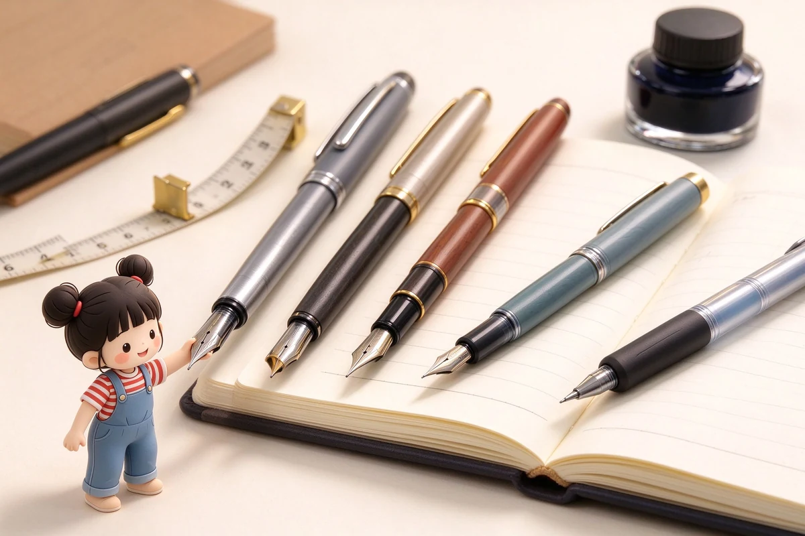
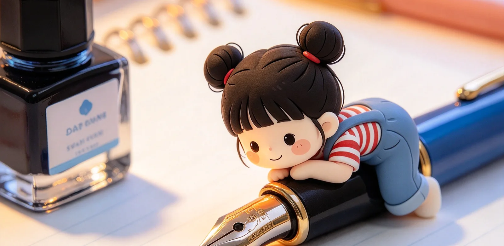
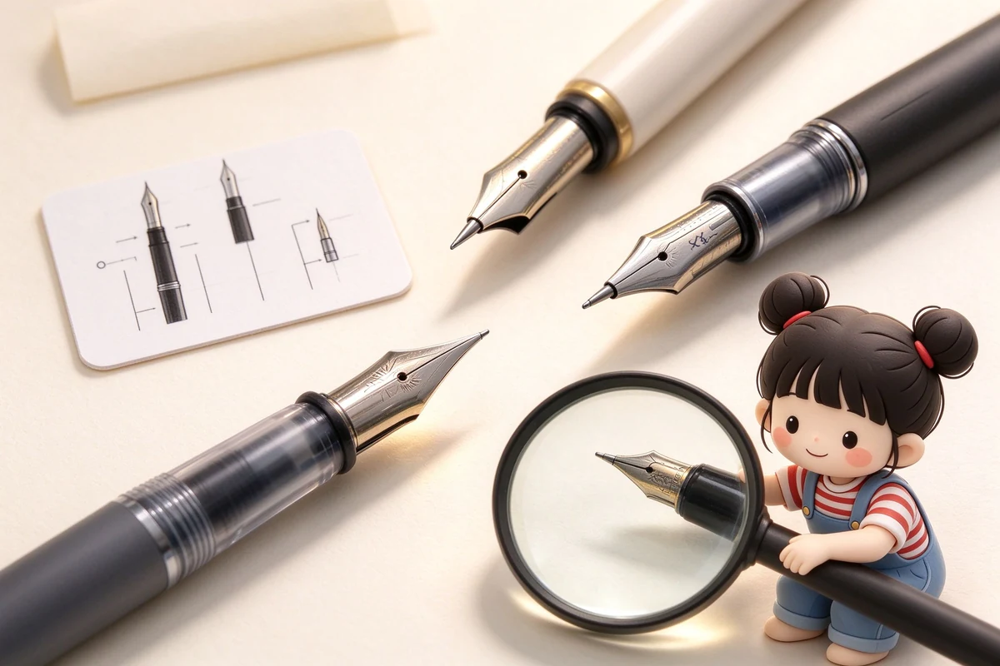
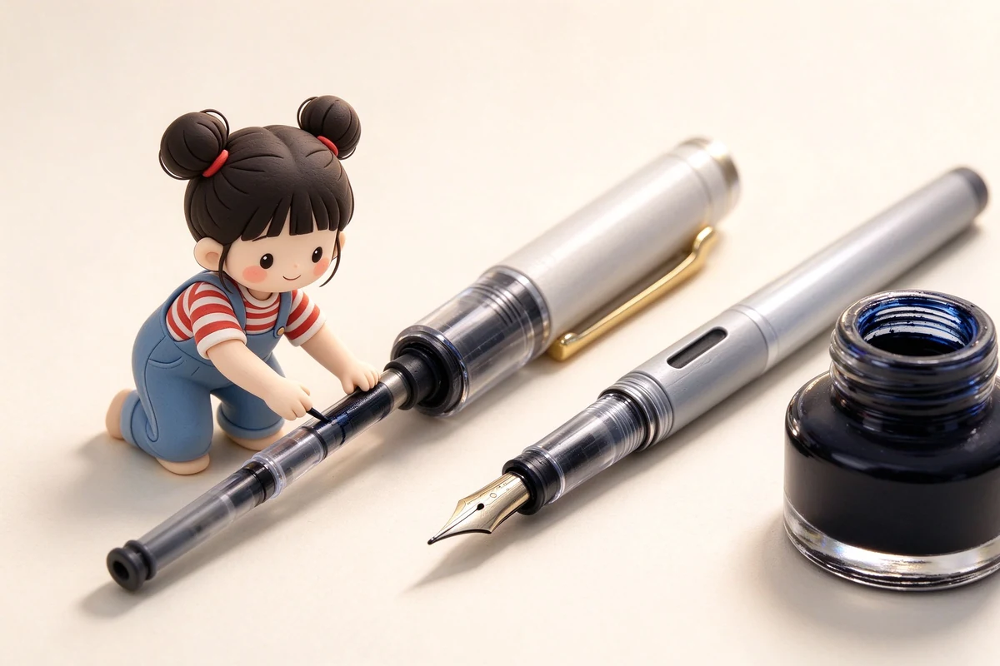
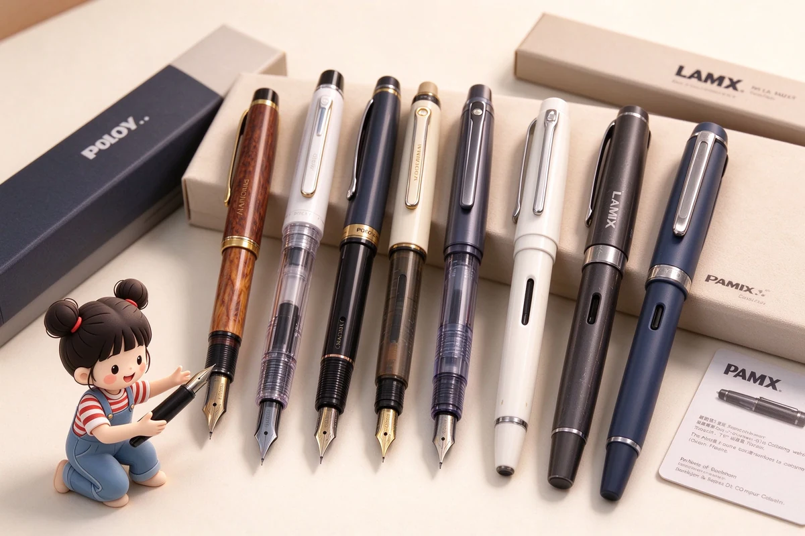

鋼筆新手完全指南：第一次買鋼筆前該懂的 10 件事
鋼筆不難入門，難的是第一支就買對：筆尖選 F、預算抓 300 到 800 元、先從卡式墨水管開始，九成新手不會後悔。


鋼筆不難入門，難的是第一支就買對：筆尖選 F、預算抓 300 到 800 元、先從卡式墨水管開始，九成新手不會後悔。
寫到手痠多半不是你的手沒力，是筆沒選對：日常書寫整支抓在 15 到 22 克、筆握口徑落在 10 到 13mm，再去談重心前後，順手度差很多。
左撇子寫鋼筆最痛的不是刮紙，是手背永遠掃到未乾的墨；解法很簡單：快乾墨水＋F 或 EF 尖＋把手抬高一點，九成的糊與髹都能解決。

金尖貴不是因為黃金本身值多少，而是它比較軟、能隨按壓張開又回來；但不是每個金尖都軟，也不是每個鋼尖都硬，關鍵在厚薄與設計。
筆尖粗細看的是最前端那顆小銥粒：日系 F 大約 0.4mm、歐系 F 約 0.6mm，寫中文抓日系 F，寫歐系筆想細字要往 EF 抓。
刮紙與斷墨九成不是筆爛，是筆尖那兩根細縫（tine）一高一低；用十倍放大鏡看正面、再用信用卡邊輕壓高的那根，很多問題當場解決。

上墨方式的核心矛盾只有一個：裝得多就麻煩、裝得少就方便。卡式最省事但容量小，活塞真空裝得多但只喝瓶裝墨，中間的吸墨器是多數人的平衡點。

鋼筆其實不用天天洗，但有兩個時機一定要沖：換顏色前、跟要放超過兩週不寫時。用室溫清水把筆舌沖到水變清，是所有保養的基本功。
鋼筆九成的『壞掉』其實是不出水、漏墨或刮紙這三類，先洗、再對齊筆尖、檢查卡水與氣密，多數能自救；真的摔歪結構或筆舌裂開，才需要送修。

歐美鋼筆跟日系的最大差別是『粗一個號』：同樣寫 F，LAMY 這類歐系大約 0.6mm，想寫細字要往 EF 抓；三家性格也完全不同——設計感、商務感、手工質感各據一方。
百樂強在『一條龍』：從 NT$380 的 Kakuno 入門，到 14K 金尖的 Custom 74，再到真空上墨的 Custom 823，你可以從頭用到尾都不換牌子。
寫樂與白金性格很不一樣：寫樂迷的是 21K 金尖那種明顯回彈，白金賣的是 Slip & Seal 防乾氣密蓋——一個給手感派，一個給容易忘記蓋筆蓋的人。